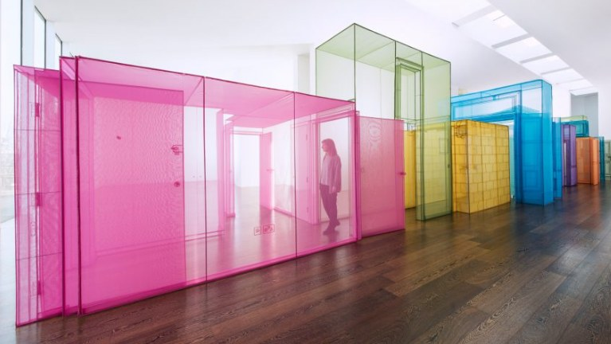
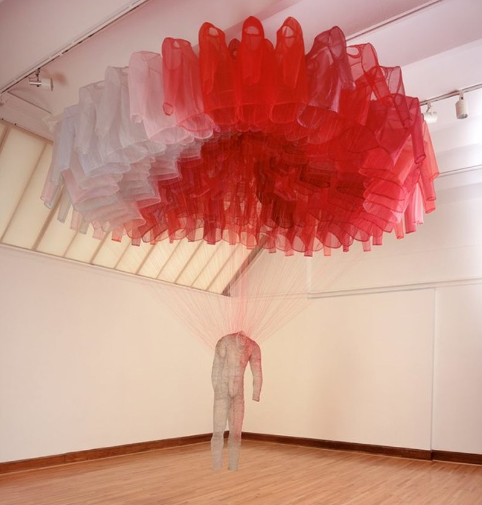

From the Venice Biennale to Tate Modern, his work have been shown around the world, often packed into the same suitcases he folds them into.
Floor, 1997–2000
2001 · Venice, Italy
49th Venice Biennale
Suh represented South Korea at the 2001 Venice Biennale, one of the most important international art events. Floor, the glass floor held up by tiny figures, was part of the show and brought his work to a worldwide audience.

Hub works, 2015–2016
2017 · Victoria Miro, London
Passage/s
His first show at Victoria Miro came soon after his move to London. A row of fabric hallways, the Hub works, turned the in-between spaces of his homes into one long walk-through corridor.

Paratrooper II, 2005
2005 · The Fabric Workshop and Museum, Philadelphia
Paratrooper II
Suh made Paratrooper II during a residency at The Fabric Workshop and Museum, where the staff helped him develop a new way of knitting monofilament. It was shown hanging from the ceiling at the Pennsylvania Academy of the Fine Arts.
The ideas in the work
Home
Not just a building, but the feeling of a place. Suh measures and sews his homes so he can keep them.
Displacement
Moving between Korea, the US, and the UK left him between places. His work lives in that in-between.
Memory
Details like a radiator or a light switch are copied exactly: the small things we remember without trying.
Identity
Uniforms and crowds ask where the individual ends and the group begins.
More major shows
Whitney Museum of American ArtNew York
Serpentine GalleryLondon · 2002
Los Angeles County Museum of ArtLos Angeles
Smithsonian American Art MuseumWashington, D.C.
Tate Modern: Walk the HouseLondon · 2025
Collections & awards
His work is held by the Museum of Modern Art and the Guggenheim in New York and by Tate Modern in London.
In 2017 he received the Ho-Am Prize in the Arts, one of South Korea's most respected awards.